InterContinental Danang Sun Peninsula Resort Review: As Close to Perfect as a Luxury Resort Gets
By Ryan Yousefi
9.9/ 10Overall Rating: 9.9/10
There are luxury hotels, there are five-star resorts, and then there are places that make you reconsider everything you thought a five-star experience was supposed to be.
The InterContinental Danang Sun Peninsula Resort belongs firmly in that last category.
Hidden among the mountains of Da Nang's Son Tra Peninsula, overlooking a secluded bay with a private beach, the resort is the sort of property that seems almost unreasonable in its ambition. Its architecture is extraordinary, the setting is difficult to replicate, and its attention to detail makes even the most mundane parts of a hotel stay feel like something special.
Having lived in Da Nang for years, I've become familiar with the city's seemingly endless collection of luxury beachfront properties. There is certainly no shortage of beautiful hotels here. Along My Khe Beach and farther south toward Hoi An, travelers can choose from dozens of internationally recognized resorts offering oceanfront pools, enormous breakfast buffets, and the kind of service Vietnam has become famous for.
But the InterContinental Danang Sun Peninsula Resort is different.
It doesn't feel like another luxury hotel built along the coastline. It feels like an entire world carved into the side of a mountain.
Designed by renowned architect Bill Bensley, the 189-room resort stretches across approximately 39 hectares of tropical landscape, descending through four distinct levels appropriately named Heaven, Sky, Earth, and Sea.
From its dramatic lobby to its Michelin-starred restaurant, extraordinary Club InterContinental Lounge, private beach, and beautifully designed accommodations, virtually every aspect of the property has been given considerable thought.
After experiencing the resort, I came away with an unusually high assessment.
Overall, I would rate the InterContinental Danang Sun Peninsula Resort a 9.9 out of 10.
That isn't a score I would hand out lightly.
Here's why.
Considering InterContinental Danang Sun Peninsula Resort?
Best for architecture + setting in Son Tra Peninsula. Rates and availability change daily: check current room prices for your dates on Trip.com.
The resort’s secluded bay on Son Tra Peninsula, with its buildings stepping up the forested hillside.
One of the things that makes the InterContinental unique is that the experience begins well before reaching the hotel's entrance.
Unlike the majority of Da Nang's beach resorts, which are situated along busy coastal roads surrounded by restaurants, shops, and other hotels, the InterContinental is tucked into the northern side of Son Tra Peninsula.
Getting there involves leaving the city's familiar streets and heading into the mountains.
The transformation is remarkable.
The restaurants, coffee shops, and traffic of Da Nang gradually give way to winding roads, thick vegetation, mountain scenery, and occasional glimpses of the coastline.
The road itself is an important part of the experience. Rather than arriving at another enormous beachfront development, you're traveling into a protected natural landscape that feels increasingly removed from the city.
Depending on traffic and your starting location, the journey from central Da Nang typically takes approximately 30 to 45 minutes.
And while that relative isolation could be considered inconvenient for travelers hoping to explore the city's nightlife or restaurants every evening, I see it as one of the resort's greatest strengths.
The InterContinental isn't designed to be a place where you sleep between excursions.
It's designed to be the destination.
By the time you approach the entrance, you've already begun to understand that this isn't going to be an ordinary hotel stay.
First Impressions: The Architecture Is Almost Absurdly Beautiful
There are properties that photograph beautifully but somehow feel less impressive in person.
The InterContinental has the opposite effect.
Photographs struggle to capture its scale, its layers, or just how dramatically the buildings emerge from the surrounding mountainside.
The resort's black-and-white architectural theme, exaggerated rooflines, ornate furnishings, and unexpected design details give it a personality rarely found at an international hotel chain.
Bill Bensley's fingerprints are everywhere.
One moment you're looking at traditional Vietnamese-inspired architecture. The next you're noticing elaborate patterns, theatrical furniture, or a decorative element that seems too extravagant to be practical.
Somehow, it all works.
The most impressive part is that the property doesn't feel like a collection of unrelated buildings. There's a cohesive vision that connects the mountaintop reception area to the restaurants, accommodations, swimming pools, and beach far below.
It is luxurious without feeling sterile.
It is enormous without feeling impersonal.
And despite the sheer ambition of the design, the surrounding jungle remains one of the property's defining features.
This is the rare resort where simply walking around and looking at things can be an activity in itself.
The resort's architecture reveals itself in layers, from enormous tiled roofs emerging through the mountainside vegetation to the intricate wooden details found in quieter corners of the property.
One photograph I took captures the resort's white buildings and black roofs rising above the beach, with the mountains looming behind them. It's almost impossible to tell where the resort ends and the surrounding jungle begins.
Elsewhere, elaborate wooden pavilions offer secluded places to sit, relax, and admire the mountains.
Even the reception area feels like an architectural attraction. Its dramatic black-and-white interior includes an elaborate white reception desk, intricate sculptural details, polished dark flooring, and enormous decorative features that immediately announce you're somewhere extraordinary.
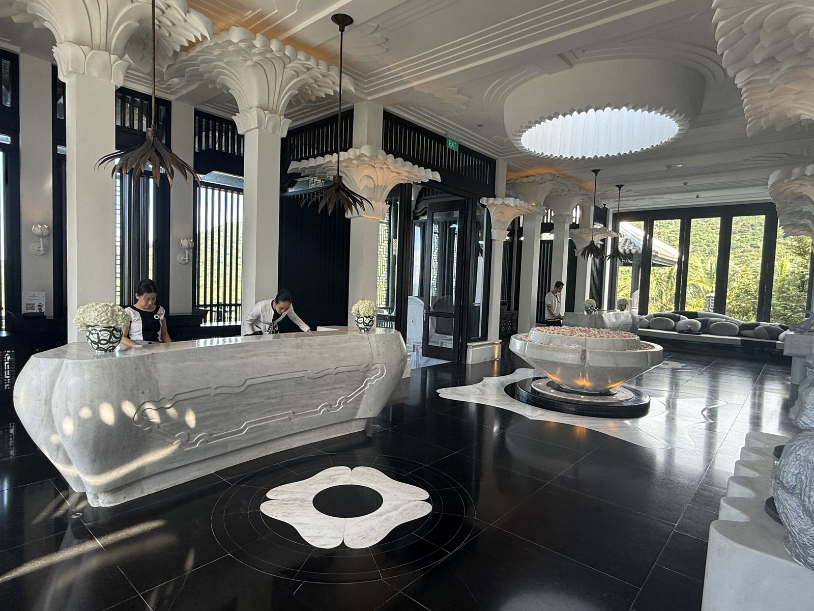
The sculpted marble reception desk beneath Bensley's lotus-shaped columns.
The result is a resort that seems to have been designed with the assumption that no detail is too small to be interesting.
Check-In: Setting the Tone
At an establishment charging premium luxury prices, the check-in experience matters.
Guests shouldn't feel as though they've arrived at an airport counter, waiting for someone to type their information into a computer and hand over a room key.
The process should feel personal, relaxed, and organized.
At the InterContinental, the arrival experience is intended to establish exactly that atmosphere.
The reception area is itself a destination, with sweeping views and design details that immediately make you want to stop and take photographs.
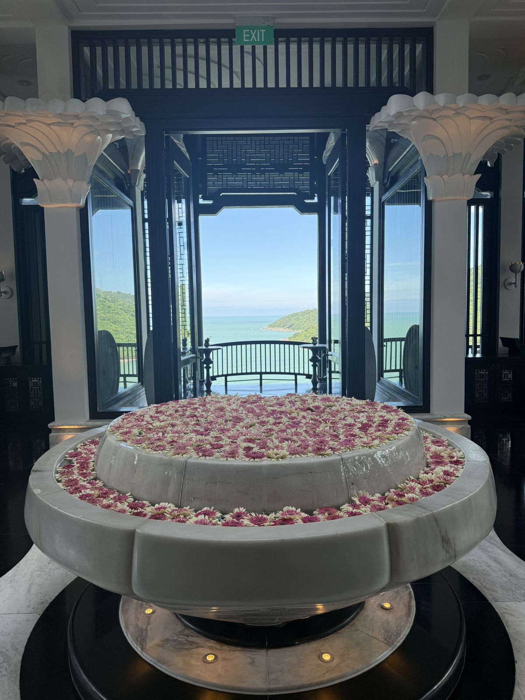
Fresh flowers fill the lobby fountain, with the bay framed by the open doors behind it.
But the surroundings are only half the equation.
What separates a truly exceptional resort from an expensive one is how quickly its employees make guests feel comfortable.
The important details are simple: being greeted without confusion, having luggage handled efficiently, receiving a useful explanation of the property, and being made to feel that the staff are genuinely pleased you've arrived.
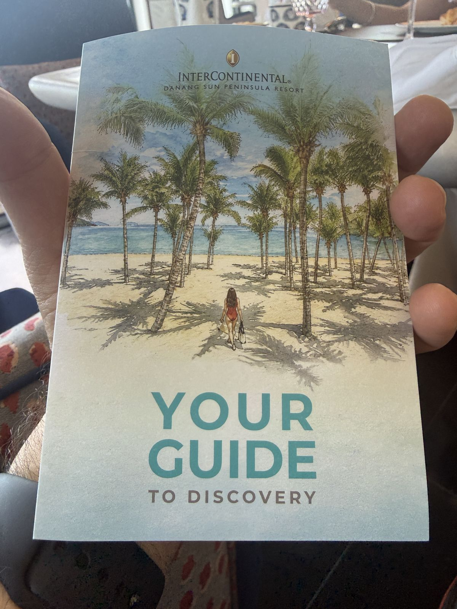
The resort's "Your Guide to Discovery" booklet.
With a resort this large, an introduction to transportation, restaurant reservations, and the various levels is especially important.
The InterContinental's layout is unlike that of almost any conventional hotel, and understanding how to navigate it can make a significant difference during the stay.
Fortunately, the resort provides transportation options designed around its unusual geography.
Club Lounge Check-In: An Underrated Luxury
For guests staying in Club-level accommodations, there's an underappreciated perk that deserves far more attention than it receives: checking in at the Club InterContinental Lounge.
And while the complimentary food and drinks are certainly welcome, that's not what makes the experience special.
It's the simple luxury of being allowed to relax while someone else takes care of everything.
There is no standing at a reception desk, leaning against a counter while an employee punches numbers into a computer to confirm that, yes, you did indeed pay for this vacation months ago.
Instead, you're invited to sit down, enjoy a coffee, take in an extraordinary view of the sea, and let the staff handle the details.
It sounds like a small distinction, but it makes an enormous difference.
After traveling, the last thing anyone wants is another administrative task. At the InterContinental, the check-in process feels less like arriving at a hotel and more like being welcomed into someone's spectacular home.
The staff take care of the paperwork and logistics while you begin doing exactly what you came here to do: absolutely nothing.
It's an almost comically simple concept, but one that even some of the world's most expensive hotels haven't quite figured out.
Luxury isn't always about what a hotel gives you. Sometimes it's about what it doesn't make you do.
The Rooms: An Experience Rather Than Just Accommodation
One of the great luxuries of staying at the InterContinental is the sense that the accommodations are part of the surrounding landscape rather than separated from it.
Across the property, rooms, suites, penthouses, and villas occupy different elevations, offering varying perspectives of the mountains, vegetation, and bay.
The architectural approach is striking.
Rather than adopting the minimalist aesthetic common to many newer luxury hotels, the interiors embrace intricate design, bold contrasts, traditional influences, and furnishings that reinforce the resort's personality.
This is a place where the room itself deserves exploration.
The private terrace or balcony is particularly important to the overall experience. At a resort with scenery this beautiful, having a comfortable outdoor space can be just as valuable as the bedroom.
It's the sort of setting where an early morning coffee can unexpectedly become one of the highlights of the trip.
The same applies to the bathrooms, which are designed to complement the elaborate interiors rather than feel like generic luxury-hotel installations.
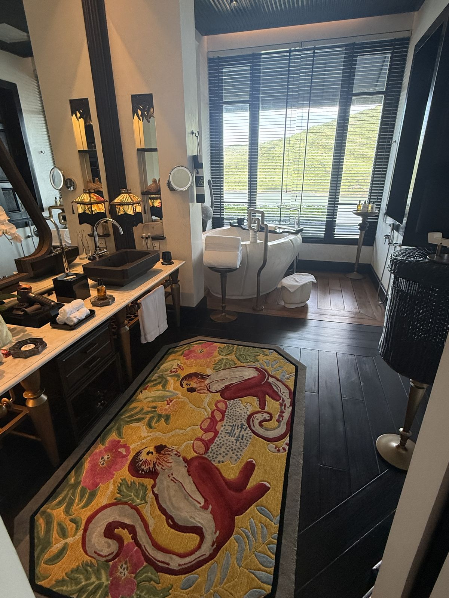
The bathroom: a freestanding tub by the window, twin vanities and a monkey-patterned rug.
Of course, beautiful furniture and expensive finishes mean relatively little if a room doesn't deliver on the fundamentals.
The bed needs to be genuinely comfortable. Air conditioning must perform flawlessly in Vietnam's tropical climate. Water pressure, cleanliness, lighting, and soundproofing all matter.
At this price level, those details should be nearly invisible because everything simply works.
Our Club Panoramic King Room: Finding Absolute Peace
Our accommodations were a Club-level Panoramic King room, featuring an extended wraparound balcony facing the sea.
And here's where I have a problem as a writer.
I'm not sure there are words that adequately describe what it feels like to stand on that balcony.
It's not simply the view, although the view is extraordinary. It's the almost complete absence of everything you didn't realize you wanted to escape.
The noise. The crowds. The constant reminders that other people exist just beyond your personal space.
All of it seems to disappear.
Standing outside our room, surrounded by the mountains and looking out toward the water, I genuinely felt as though I had found the most peaceful place I'd ever been in my life.
The only experience that comes close, ironically, was another InterContinental property in Bali, which gave me a similar feeling that the entire resort somehow existed just for us.
But the Da Nang property takes that sensation and multiplies it by a hundred.
Part of that comes down to the resort's extraordinary layout. Everything is spread across the mountainside, with accommodations, restaurants, swimming pools, and activities occupying their own distinct spaces.
You could conceivably go hours without encountering another guest.
Not because the hotel is empty. Far from it.
But because there is so much to do, in so many different places, that everyone seems to disappear into their own little corner of paradise.
And perhaps that's what I found most remarkable.
The seclusion never feels like you're deliberately trying to get away from other people. It feels like a reward for simply being there.
There's a tremendous difference between privacy that requires effort and privacy that comes naturally.
At the InterContinental Danang, privacy is practically built into the architecture.
Inside Our Panoramic King Room
While the balcony is undoubtedly the star of the show, the room itself deserves considerable attention.
The first thing that strikes you is how thoroughly the resort's extraordinary design philosophy extends into the accommodations.
At many luxury hotels, the lobby gets all the attention while the rooms end up looking surprisingly interchangeable.
Not here.
Our Panoramic King room was filled with architectural details that made it feel less like a hotel room and more like a private residence designed by someone with an unlimited imagination.
The enormous king-size bed sits beneath an elaborate dark wooden headboard, framed by decorative latticework and flanked by bedside tables with unusually shaped lamps. The contrasting black-and-white color scheme carries through the room, tying it to the resort's unmistakable architectural identity.
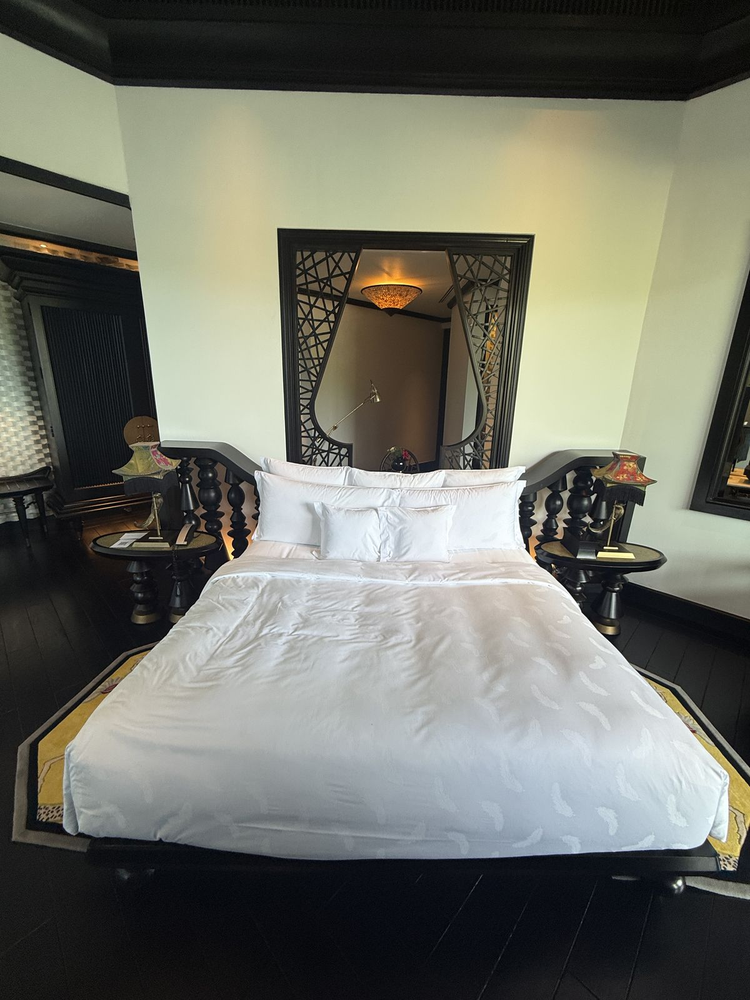
The king bed, with the latticed interior window to the workspace behind it.
Even the lamps are interesting.
That's not something I find myself saying very often about hotel rooms.
The bedroom also features dark wooden flooring, elegant furnishings, and carefully considered lighting that makes the entire space feel warm without sacrificing its dramatic design.
And then there is the unusual interior window connecting the bedroom with the adjoining workspace.
Framed by intricate black wooden latticework, it creates an almost theatrical view between the two areas, making the room feel connected while still offering distinctly different spaces.
The workspace itself is another reminder that nothing here seems to have been selected from a generic hotel furniture catalog.
A beautifully shaped dark wooden desk sits beneath an adjustable brass reading lamp, accompanied by a decorative chair that looks like it belongs in an art gallery.
There are the practical details you'd expect, including a telephone, writing materials, and conveniently positioned room information.
But it's the way everything fits together that makes the room so memorable.
You could photograph almost any corner and immediately recognize that you're staying somewhere special.
The Little Luxuries That Make a Difference
At a property commanding the prices of the InterContinental, beautiful furniture and impressive views are expected.
What often separates a truly outstanding room from an ordinary luxury accommodation is the attention paid to smaller details.
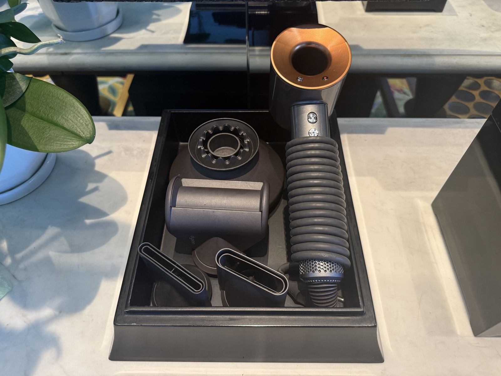
A Dyson hair dryer and attachments, set out in the room.
Our room included a Nespresso coffee machine, providing the convenience of making a proper coffee without having to call room service or leave the comfort of our private retreat.
That might sound unremarkable, but when you have a balcony overlooking one of the most peaceful stretches of coastline in Vietnam, being able to make a coffee whenever you want becomes a surprisingly valuable luxury.
There's no reason to get dressed, find a restaurant, or interact with anyone.
You can simply make your coffee and return to the view.
The complimentary refreshments were another welcome touch, including pale ale beers alongside other provided items.
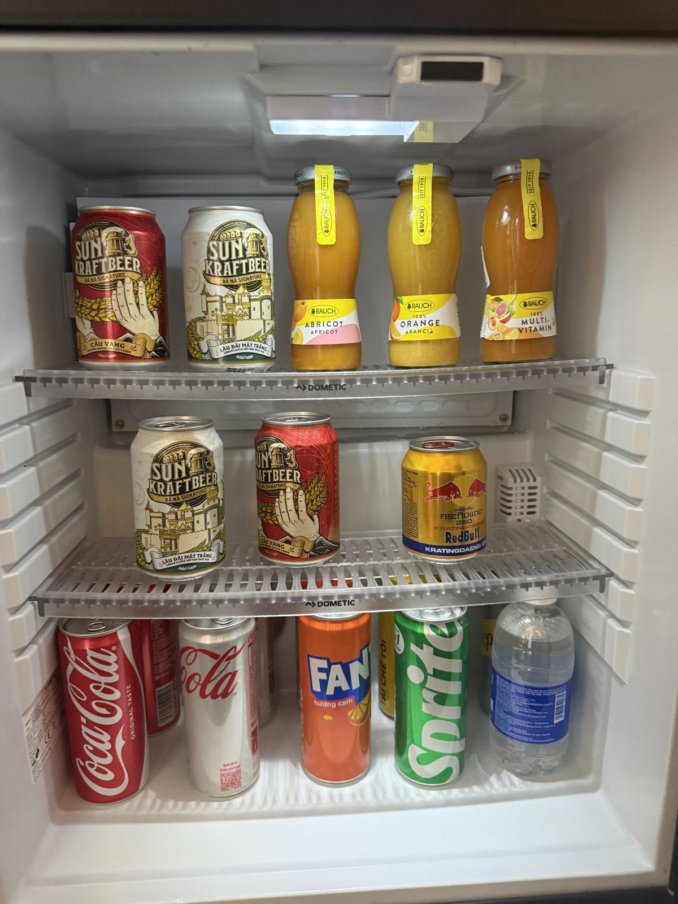
The in-room fridge: Sun Kraftbeer lagers and pale ale, Rauch juices and soft drinks.
It's a small gesture, particularly when compared with the overall cost of staying here, but one that reinforces the feeling that guests are being looked after rather than constantly presented with additional charges.
At many expensive hotels, opening the minibar feels like inviting a financial mistake.
Here, complimentary items help create the opposite impression.
It's the hospitality equivalent of someone telling you to make yourself at home.
And in an environment this beautiful, those little details matter more than you might expect.
A Balcony That Redefines Privacy
Of course, the room's most extraordinary feature remains its extended wraparound balcony.
With panoramic views of the bay, the beach below, and the forest-covered peninsula stretching into the distance, the outdoor space feels like a private observation deck overlooking paradise.
The coastline curves around the bay, with dense palm trees separating the beachfront from the mountainside.
Below, the resort's distinctive rooftops appear among the vegetation, almost disappearing into the surrounding forest.
The effect is extraordinary.
There are no enormous buildings competing for your attention, no crowded streets, and none of the urban distractions that usually accompany even the most beautiful oceanfront hotels.
Just the mountains, the sea, and a sense of complete isolation.
We could sit on our balcony, look out across the water, and feel completely alone in one of the most beautiful places in Vietnam, knowing that an entire world-class resort was operating all around us.
And that's the remarkable thing about this room.
It would be easy to spend a substantial portion of your stay simply sitting outside and watching the day unfold.
That combination of absolute tranquility and extraordinary luxury is incredibly difficult to achieve.
And once you've experienced it, it's equally difficult to forget.
Club InterContinental Lounge: Luxury Within Luxury
For guests trying to decide whether to pay extra for Club InterContinental access, this deserves serious consideration.
The Club InterContinental Lounge isn't merely a room where guests can pick up complimentary drinks and snacks.
It's one of the property's defining premium experiences.
Positioned high above the bay, the lounge combines remarkable views with an atmosphere that feels more private and residential than a conventional hotel restaurant.
Its colorful interiors, comfortable seating arrangements, and carefully designed spaces create an environment where spending an hour or two feels like an activity rather than an obligation.
Club privileges include breakfast options, afternoon tea, and evening cocktails accompanied by canapés.
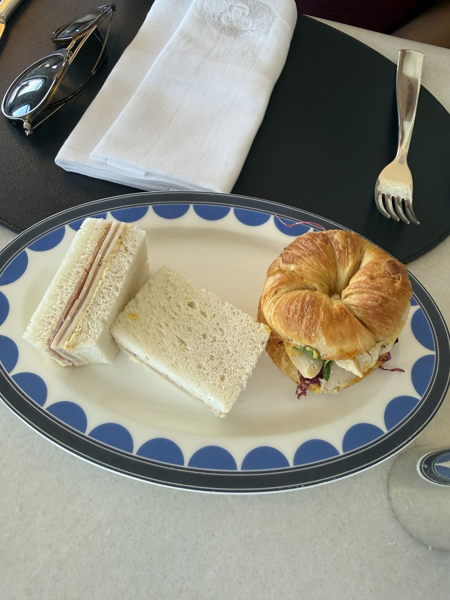
Sandwiches and a filled croissant, served on the resort's blue-rimmed china.
The greatest benefit, however, may be the flexibility.
Instead of coordinating every meal or drink around a formal restaurant reservation, guests can return to the lounge throughout the day for a quieter and more personalized experience.
Afternoon tea provides an opportunity to step away from the heat and enjoy a slower pace, while the evening cocktail service creates a natural transition between an afternoon at the beach and dinner.
For couples, this can feel especially romantic.
For families, having a comfortable additional space with refreshments can be equally valuable.
I also appreciate that the Club concept at the InterContinental is about more than the food or drinks. It's about delivering an elevated level of attention and making an already luxurious property feel even more exclusive.
Whether the upgrade represents good value depends on the nightly price difference and how much time guests intend to spend at the resort.
But for travelers planning to remain on the property for most of their stay, Club access would be near the top of my list of upgrades to consider.
Cocktail Hour in the Club Lounge: Better Than Advertised
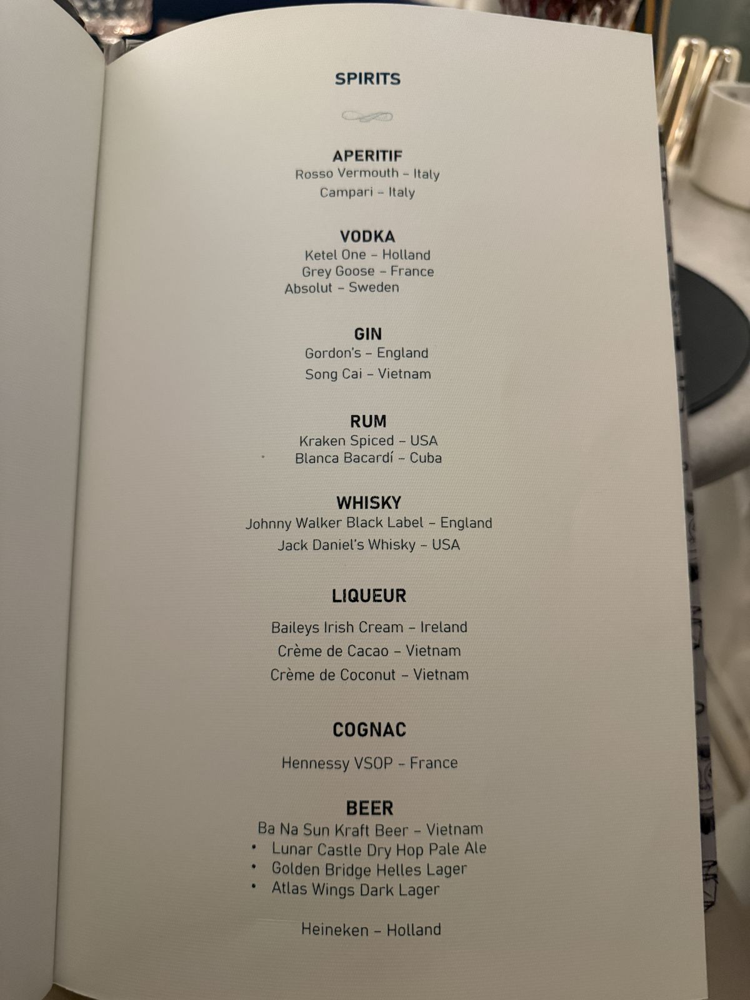
The Club Lounge spirits menu: aperitifs, vodka, gin, rum, whisky, liqueurs, Hennessy VSOP and local craft beer.
The evening cocktail hour in the Club InterContinental Lounge deserves a closer look.
The menu covers the essentials: Rosso vermouth and Campari as aperitifs, Ketel One, Grey Goose and Absolut vodka, Gordon's and Vietnam's own Song Cai gin, Kraken Spiced and Bacardí rum, Johnnie Walker Black Label and Jack Daniel's whisky, Baileys and other liqueurs, Hennessy VSOP cognac, and beer from Heineken and Ba Na Sun Kraft.
The drinks were better than advertised.
The food selection, on the other hand, was lacking compared to other hotels I've stayed at with similar cocktail hours.
But it's called cocktail hour, not buffet hour.
The light bites are there to go with your drinks, and when each of those drinks would normally cost 500,000 VND, having something to eat alongside them is a bonus.
Getting Around: The Famous Nam Tram
One of the most distinctive features of the resort is the Nam Tram, a funicular railway connecting the different elevations of the property.
Its cabins take inspiration from traditional Vietnamese basket boats, making the transportation system itself another example of Bensley's creative approach.
In a conventional resort, getting from your room to the beach might involve an elevator and a short walk.
Here, the journey can involve a scenic ride down the mountainside, with views of the jungle, surrounding architecture, and ocean.
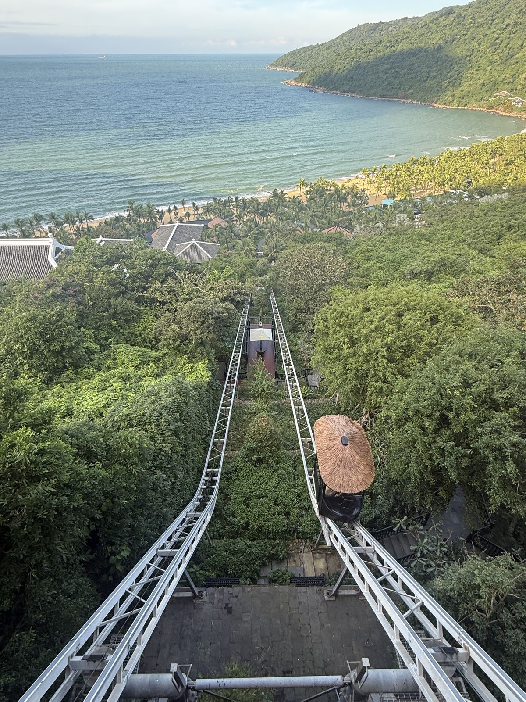
The Nam Tram funicular descends through the jungle toward the beach and the bay.
It's both functional transportation and a genuine attraction.
The resort also uses electric buggies to help guests travel between different locations.
That assistance is important because this is a sprawling hillside property, not a flat beachfront hotel.
Guests with mobility concerns, families with younger children, or anyone simply hoping to avoid climbing hills in the afternoon heat will appreciate having transportation available.
The scale does mean that a little advance planning is helpful.
You probably won't want to return to your room every time you forget something while relaxing by the beach.
But that is a minor trade-off for a resort with such an extraordinary setting.
The Swimming Pools: Some of the Best Views in Da Nang
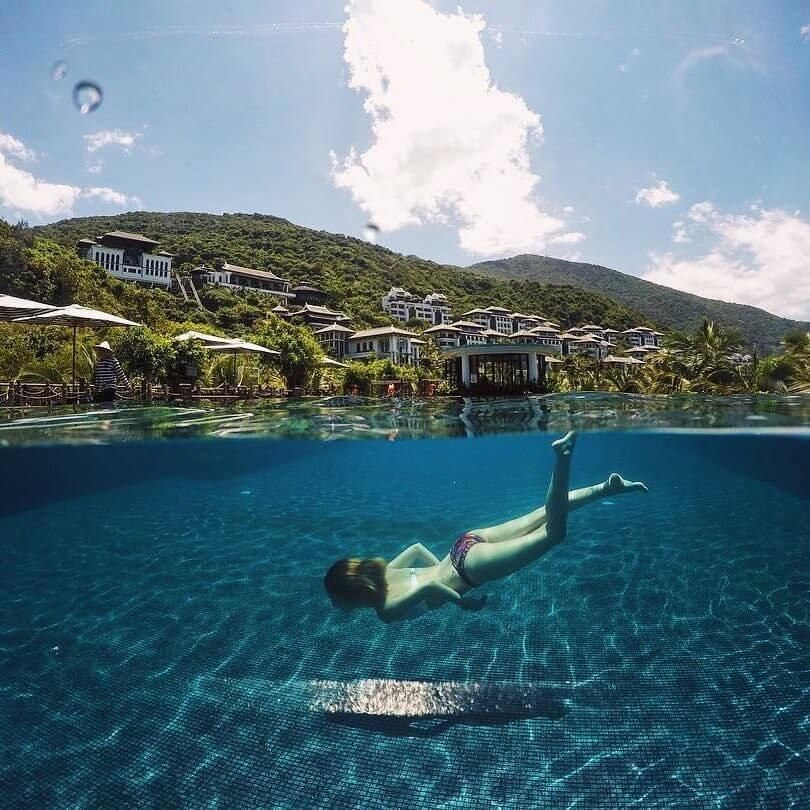
A swimmer in the infinity pool, with the resort and the Son Tra hillside behind.
The InterContinental's pools are another standout attraction.
The signature L_o_n_g Pool is a 50-meter infinity pool that offers dramatic views of the surrounding mountains and landscape.
It's the sort of swimming pool that belongs on the cover of a luxury travel magazine.
More importantly, it offers something many resort pools struggle to achieve: a genuine sense of tranquility.
The design emphasizes the surrounding natural environment rather than trying to compete with it.
It's easy to imagine spending hours here, alternating between swimming, lounging, and simply admiring the scenery.
The Garden Pool provides another swimming option, particularly attractive for guests seeking a different atmosphere.
Having more than one pool is important at a resort of this caliber. Not every guest wants the same experience, and a property that successfully accommodates both quiet relaxation and family recreation is better for it.
Poolside service is another area where luxury hotels reveal their true standards.
Comfortable loungers and beautiful views are expected. What makes the difference is attentive service, readily available towels, refreshments, and employees who remain helpful without constantly interrupting guests.
When everything comes together, a day at the pool should feel completely effortless.
The Private Beach: Da Nang's Hidden Paradise
Da Nang is famous for its beaches, but the InterContinental offers something that most hotels in the city simply cannot replicate.
Privacy.
The resort occupies a secluded bay along Son Tra Peninsula, with approximately 700 meters of beachfront surrounded by lush vegetation.
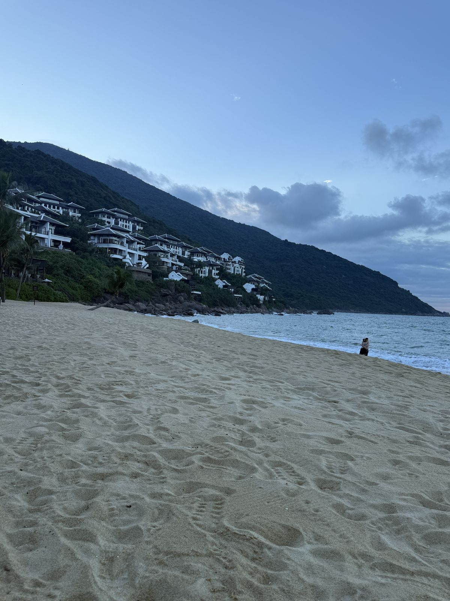
The beach at dusk, with the resort's buildings stepping up the hillside.
There are no endless rows of competing high-rise hotels.
There isn't a busy beachfront road immediately behind the sand.
And there isn't the constant activity that characterizes the more developed sections of Da Nang's coastline.
Instead, the beach feels remarkably removed from the rest of the city.
The combination of mountains, palm trees, sand, and the sea creates a setting that feels closer to an isolated tropical island than a resort just outside one of Vietnam's largest cities.
For me, the beach is one of the strongest arguments for staying here.
A luxurious room can be replicated elsewhere. An excellent restaurant can be found in almost any major destination.
But the natural setting of this particular beach is something far more difficult to duplicate.
Spending time along the shoreline also provides a different perspective of the resort's architecture, with the buildings climbing dramatically into the jungle above.
It's an impressive reminder of just how much planning went into the property.
Restaurants: A Genuine Dining Destination
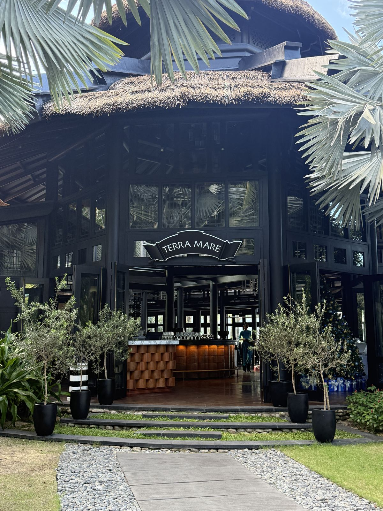
The entrance to Terra Mare, under its thatched roof.
Dining is one of the areas where the InterContinental makes a particularly strong case for being considered more than a resort.
The property has developed a collection of restaurants and bars that offer substantially different experiences, ranging from casual beachfront dining to Michelin-starred French cuisine.
Citron is perhaps the most visually recognizable dining venue.
Located high above the bay, it features the famous private dining tables inspired by Vietnamese conical hats, extending outward over the hillside.
The views are extraordinary, but Citron is more than just an Instagram destination.
Its menu highlights Vietnamese specialties alongside international offerings, making it an appealing choice throughout the day.
The breakfast experience deserves particular attention at a resort like this.
A truly great breakfast isn't simply about offering dozens of dishes. It's about freshness, variety, presentation, and being able to enjoy a meal without feeling rushed.
The combination of Vietnamese food, international favorites, and beautiful surroundings makes Citron one of the property's most appealing dining settings.
At the opposite end of the culinary spectrum is La Maison 1888, one of Vietnam's most celebrated fine-dining restaurants.
The Michelin-starred restaurant is a major attraction in its own right, offering sophisticated French cuisine in an elaborately designed setting.
For travelers who enjoy destination dining, having a restaurant of this caliber inside the resort is a substantial advantage.
Terra Mare brings a different personality, emphasizing Italian-inspired cooking and a relaxed seaside atmosphere.
This variety matters, particularly for guests staying several nights.
One evening can be dedicated to an elaborate fine-dining experience, while another can involve a casual meal overlooking the water.
Rather than relying on one signature restaurant to carry the property's culinary reputation, the InterContinental offers reasons to explore its different venues.
The Long Bar: Where the Afternoon Disappears
Every great resort needs a bar that becomes part of the experience.
At the InterContinental, the Long Bar is exactly that.
Stretching approximately 50 meters along the beachfront, it features an unusual combination of oversized seating, creative furniture, and a relaxed atmosphere that encourages guests to settle in.
The design is unmistakably Bensley.
This isn't a generic hotel bar with a polished counter and interchangeable lounge chairs.
It's a destination with its own visual identity.
The location near the beach makes it especially appealing after a swim or an afternoon spent in the sun.
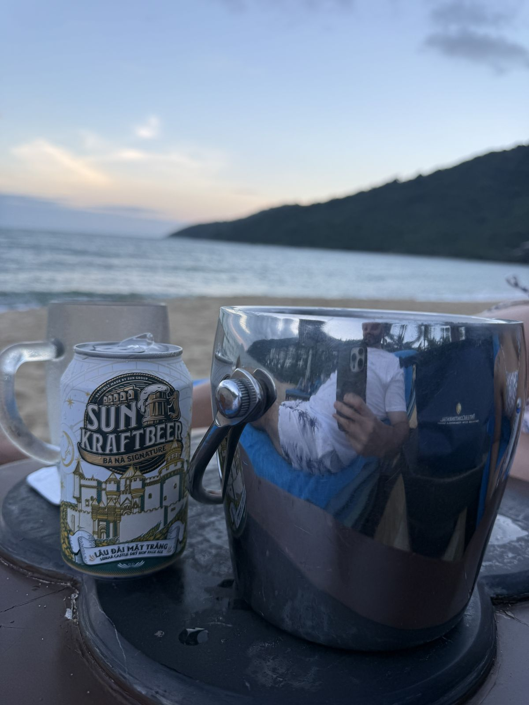
A Sun Kraftbeer pale ale by the water as the light fades over the bay.
And while the cocktail menu and beverage service are important, the real attraction is the ability to enjoy a drink in one of Da Nang's most remarkable coastal settings.
It's the kind of place where ordering one drink can easily turn into staying for a second simply because there's no compelling reason to leave.
An Interior Unlike Any Other
The interior is every bit as distinctive as the exterior setting.
Black-and-white striped sofas stretch along an airy lounge framed by enormous white columns, oversized hanging drum-inspired fixtures, decorative sculptures, and a bold blue patterned floor.
It's an extraordinary collection of design elements that probably shouldn't work together as well as they do.
But somehow, they create one of the most memorable bar interiors I've encountered.
The space feels playful without being childish, elegant without being formal, and luxurious without the slightest suggestion that guests need to sit up straight and behave themselves.
During our visit, I enjoyed a beautifully presented cocktail served in a textured glass with a generous orange garnish.
Sitting among the striped sofas, looking toward the tropical gardens and beach beyond, it was difficult to imagine a more comfortable place to spend an afternoon.
And with Planet Trekkers located just outside, the Long Bar takes on another advantage for parents traveling with children.
While the kids are happily occupied with activities, adults have an opportunity to enjoy a little piece of the resort for themselves.
It's the sort of thoughtful arrangement that makes an already impressive property even better.
The Beach BBQ & Bonfire Buffet: A Highlight of the Stay
Of all the dining experiences available at the InterContinental, the Beach BBQ & Bonfire Buffet deserves its own section.
The concept is simple but particularly well suited to this property: combine an outdoor barbecue buffet with the atmosphere of an evening on a secluded beach.
But calling this just another luxury hotel buffet would be doing it a tremendous disservice.
Because while the food is everything you would expect from one of Vietnam's most prestigious resorts, and more, it's the setting that transforms the entire experience into something almost surreal.
The best way I can describe it is that it feels like you've accidentally wandered onto the set of a romantic comedy.
Not the part where something goes terribly wrong and the main characters spend the next 45 minutes trying to figure out their relationship.
The part at the end.
The ridiculously beautiful scene where everything has worked out, everyone is happy, the lighting is impossibly perfect, and you're wondering where on Earth they found a location that looks this good.
Except this isn't a movie set.
It's your dinner.
The tables are arranged in an extraordinary beachfront setting, with the darkness of the sea stretching beyond the warm lights of the dining area. The surrounding mountains disappear into the night, and the combination of music, ocean air, and the nearby bonfire makes the entire evening feel almost theatrical.
And somehow, you get to eat there.
The buffet itself is every bit as ambitious as the setting would suggest.
Grilled meats and seafood take center stage, accompanied by an extensive selection of side dishes, desserts, and other offerings befitting a resort of this caliber.
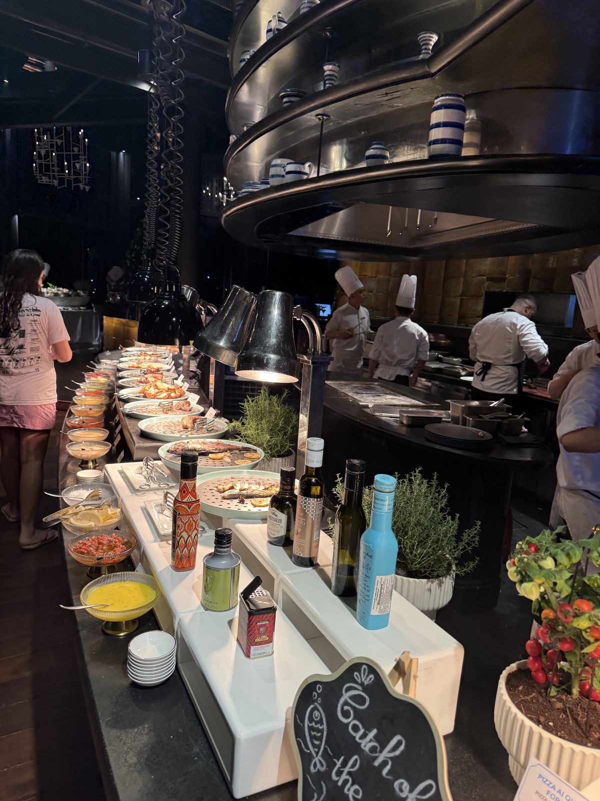
Chefs at the open kitchen beside the grill and seafood buffet.
This isn't the kind of buffet where you're trying to figure out which two or three dishes are worth putting on your plate.
It's the kind where the biggest challenge is deciding what you can reasonably eat before admitting defeat.
A Buffet That Looks as Good as It Tastes
The actual buffet presentation also deserves attention.
Rather than simply arranging dishes in large, anonymous serving trays, the food is presented on attractive ceramic platters beneath warming lamps, with individual accompaniments, sauces, and utensils arranged throughout the stations.
During our visit, the selection included beautifully roasted meats, including a large cut of pork with golden, crisp-looking skin, roasted poultry, corn on the cob, and colorful side dishes.
One of the more eye-catching offerings was a platter of vibrant purple sweet potatoes topped with a delicate shredded garnish.
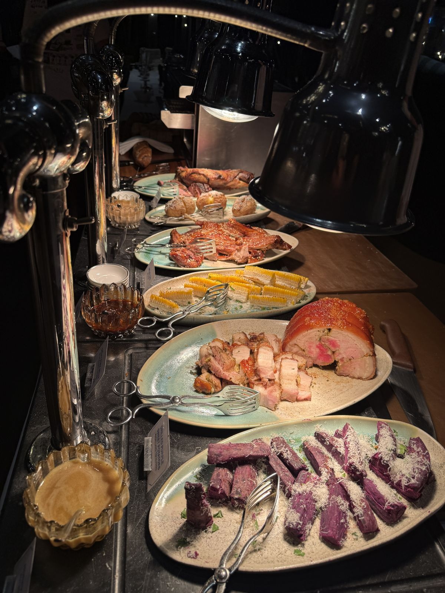
Roasts, corn and the purple sweet potatoes under the warming lamps.
It might seem like an odd detail to remember from a luxury buffet, but it illustrates the range of dishes available.
This isn't simply a parade of expensive seafood and grilled steaks.
There are also familiar comfort foods, local ingredients, colorful vegetables, and interesting preparations that invite you to try something you might otherwise overlook.
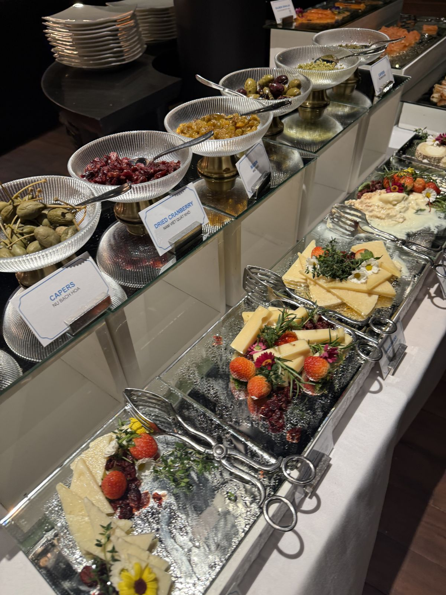
Cheeses, dried fruit, capers and olives on the buffet.
And that's part of the enjoyment.
You can approach the buffet with every intention of making sensible choices, only to find another platter that deserves a place on your plate.
Of course, the real magic happens when you step away from the serving stations and return to the beach.
Few dining experiences can compete with the contrast of an elaborate buffet illuminated by warm lights and the quiet darkness of the shoreline just a short walk away.
A Romantic Comedy Come to Life
But my favorite part of the experience wasn't necessarily something on the buffet.
It was the freedom to walk away from it.
At any point during dinner, you can get up from your table, wander toward the water, and simply disappear into the darkness of the beach.
Take off your shoes.
Feel the sand between your toes.
Listen to the waves.
Look back toward the lights of the resort and take a moment to appreciate how completely ridiculous the entire experience is.
You're standing barefoot on a secluded beach in Vietnam, surrounded by mountains, with what feels like your own private little piece of the world.
And then, whenever you feel like it, you can turn around, walk back to your table, and continue eating one of the most luxurious buffets Da Nang has to offer.
That's the part that makes the evening so memorable.
It's not simply that the food is excellent or that the surroundings are beautiful.
It's the combination of extravagance and absolute simplicity.
One moment you're enjoying an elaborate meal at one of the country's most exclusive resorts. The next, you're standing barefoot in the sand, doing something that costs absolutely nothing and feels just as special.
Very few dining experiences manage to combine those two things so effortlessly.
Beach BBQ Buffet Pricing
The resort advertises the Beach BBQ & Bonfire Buffet every Saturday evening from 6:00 p.m. to 9:30 p.m.
Published packages are:
2,688,000 VND++ per adult: Buffet with unlimited soft drinks and fresh juices.
3,488,000 VND++ per adult: Buffet with unlimited soft drinks, juices, selected wines, cocktails, spirits, and beers.
4,188,000 VND++ per adult: Premium package that additionally includes unlimited Ca' del Bosco sparkling wine.
1,099,000 VND++ per child ages 6–11.
Prices are subject to additional service charges and applicable taxes, and guests should confirm current rates when reserving.
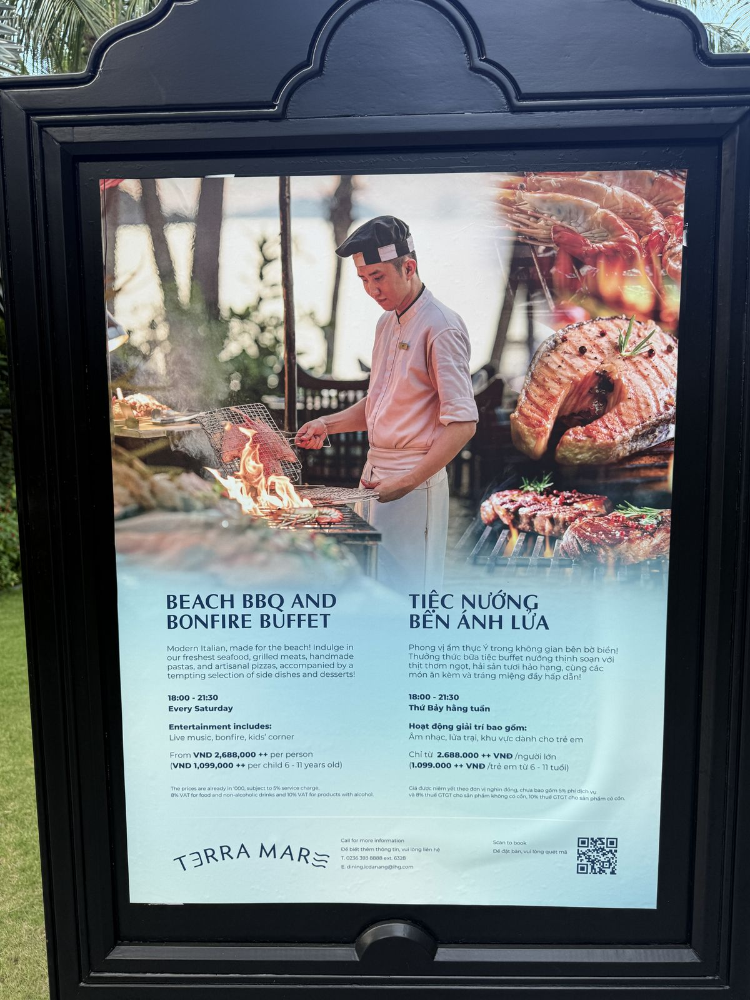
The Beach BBQ and Bonfire Buffet poster at Terra Mare, with times and prices.
Those prices certainly aren't inexpensive by Da Nang standards.
In fact, you could enjoy several excellent meals elsewhere in the city for what one evening here costs.
But I don't think comparing this experience to a typical restaurant buffet is particularly useful.
You're paying for the food, of course, but you're also paying for one of the most remarkable dining settings in the country.
The event includes live entertainment, a bonfire, and activities for children, making it appealing for couples and families alike.
And while an expensive buffet should always be judged on the quality of its food, this particular experience delivers something that can't easily be reflected on a menu or price list.
The feeling of being somewhere truly special.
It's difficult to put a price on that.
I can tell you this much: long after I've forgotten the specifics of individual dishes, I'll remember what it felt like to walk away from the table, stand in the sand, and look back toward the lights of the InterContinental.
That is what makes this particular buffet worth remembering.
It's dinner, a movie-worthy setting, and a beach vacation all rolled into one extraordinary evening.
Activities: Much More Than a Beach Holiday
There is considerably more to do here than alternate between a swimming pool and a beach chair.
The resort offers a range of recreational and wellness activities that can include yoga, tai chi, guided walks, beach games, tennis, pickleball, and other organized experiences.
Technogym equipment in the fitness centre.
The surrounding natural environment is an important attraction in itself.
Son Tra Peninsula is one of Da Nang's most remarkable natural areas, and the opportunity to experience its tropical vegetation and wildlife adds an element that most beachfront resorts cannot offer.
The resort also has family-oriented activities and recreational facilities that make it appealing to guests traveling with children.
For adults seeking relaxation, spa treatments and wellness experiences provide an entirely different way to spend an afternoon.
And for visitors interested in architecture, design, or photography, the resort's grounds are practically an attraction of their own.
One of the property's greatest strengths is that guests can enjoy a full day without leaving the grounds and without feeling that they're simply repeating the previous day's activities.
That is particularly important for a destination resort located away from the city's main tourism districts.
Planet Trekkers Kids Club: An Unexpected Highlight
One of the most pleasant surprises of our stay was discovering just how much thought the InterContinental has put into entertaining its youngest guests.
The resort's Planet Trekkers Kids Club is far more than a room with a few toys, a television, and some coloring books.
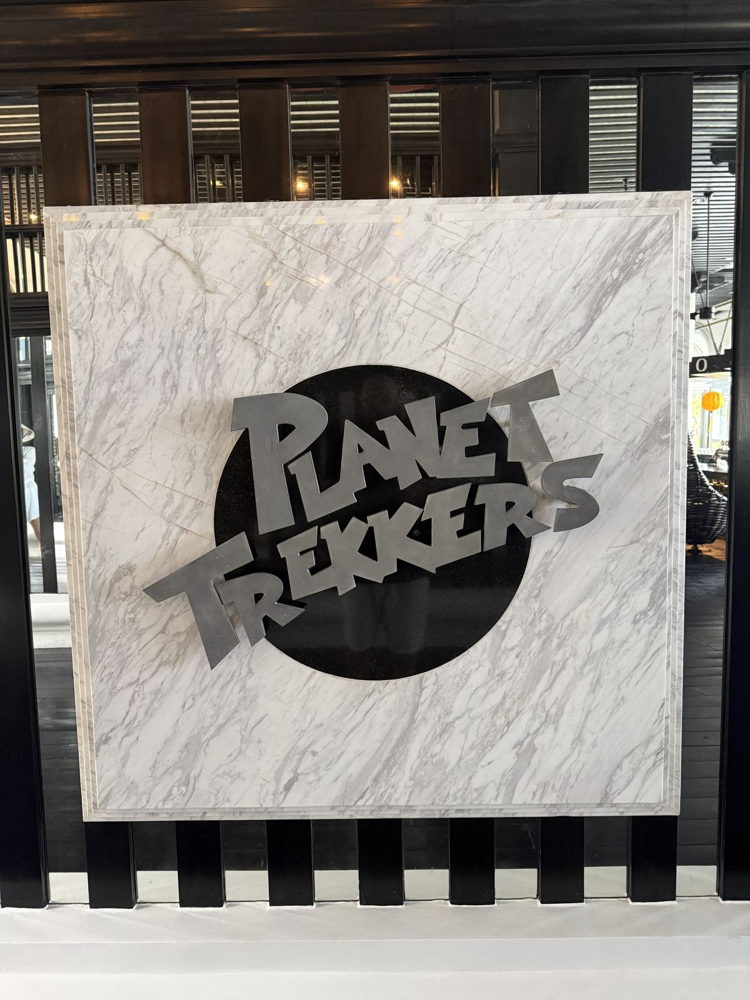
The Planet Trekkers sign at the kids' club.
It's a thoughtfully designed space filled with activities, comfortable seating, books, games, and features that make children genuinely excited to spend time there.
The interior is almost as elaborate as the rest of the resort.
A large, curved slide winds down into a colorful seating area, while bright green cushions, playful decorations, and imaginative furnishings create an environment that feels more like an exclusive children's clubhouse than a conventional hotel playroom.
There are even whimsical spotted leopard decorations suspended from the ceiling, continuing the resort's habit of incorporating unexpected details into almost every space.
But the physical design, impressive as it is, isn't what makes Planet Trekkers special.
It's the people.
The Kids Club is staffed by a group of some of the friendliest women you'll ever meet, employees who seem genuinely delighted to spend time with children rather than simply supervise them.
And the difference is immediately apparent.
They're not just sitting behind a desk making sure nobody gets hurt.
They're actively engaging with children, organizing activities, helping with creative projects, and making the experience feel personal.
Activities can include painting children's nails, conducting DIY craft classes, and helping kids create something they can proudly show their parents afterward.
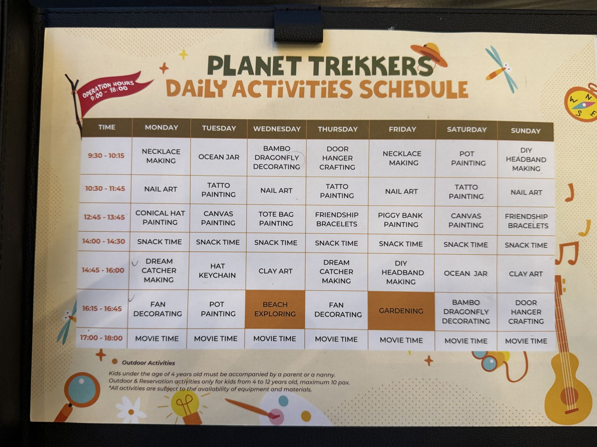
The Planet Trekkers daily schedule: crafts, nail art, snack time and a movie to finish the day.
It's exactly the sort of attention that makes children want to return.
And for parents, that's an enormous benefit.
Anyone who has traveled with young children knows that even the most spectacular luxury resort can become a little less relaxing when every hour revolves around keeping the kids entertained.
A genuinely excellent Kids Club changes that equation.
The Location Is Almost Too Perfect
Perhaps the smartest part of Planet Trekkers is its location.
The Kids Club is situated just outside the Long Bar, one of the resort's most beautiful places to relax.
That placement feels almost strategically designed for parents.
Children have a dedicated space filled with supervised entertainment, while their parents can enjoy a quiet drink or simply relax at the Long Bar, just steps away, subject to the club's supervision policies.
There's something wonderfully reassuring about knowing your child is enjoying himself in a safe, engaging environment while you're nearby.
It doesn't require disappearing to another section of the enormous resort or feeling disconnected from what's happening.
Instead, when drop-off arrangements permit, parents can enjoy an hour or two of genuine relaxation while their children have an experience of their own.
And frankly, that's a luxury worth celebrating.
Because the best family resorts aren't necessarily the ones that offer the most activities for children.
They're the ones that understand parents are on vacation, too.
Planet Trekkers manages to strike that balance exceptionally well.
With its imaginative design, welcoming staff, and convenient location beside the Long Bar, it deserves recognition as one of the resort's most valuable family amenities.
For families considering a stay at the InterContinental Danang Sun Peninsula Resort, I would place it high on the list of reasons to choose this property.
It's not simply somewhere to leave the kids for a little while. It's somewhere they genuinely want to be.
The Spa and Wellness Experience
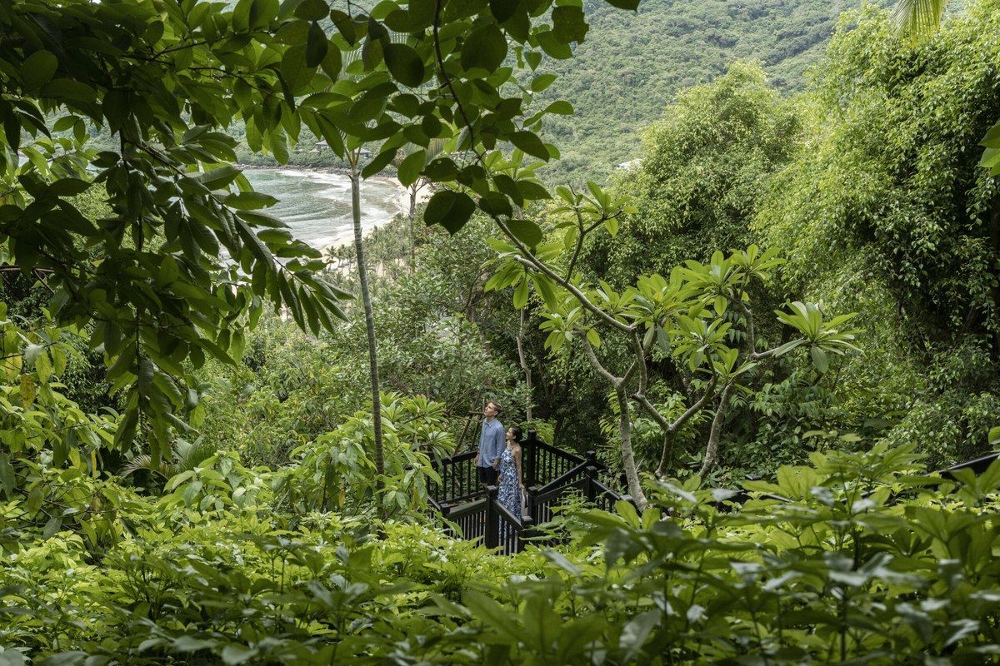
A walkway through the forest that surrounds the resort.
A resort of this caliber would feel incomplete without an equally ambitious approach to wellness.
The Mi Sol Spa complements the property's secluded atmosphere with treatments designed around relaxation and personal well-being.
The setting is particularly appropriate.
Surrounded by forested hills and removed from Da Nang's busy urban environment, the resort already encourages guests to slow down.
A dedicated spa experience takes that sense of escape a step further.
For travelers considering a longer stay, spa treatments are an attractive addition to the itinerary, particularly when combined with a quiet morning, afternoon tea, and an evening meal overlooking the water.
The emphasis here should be on the overall experience rather than simply comparing treatment menus or prices with other spas in Da Nang.
At the InterContinental's level, ambiance, privacy, professionalism, and attention to detail are as important as the treatment itself.
Staff and Employees: The Difference Between Excellent and Extraordinary
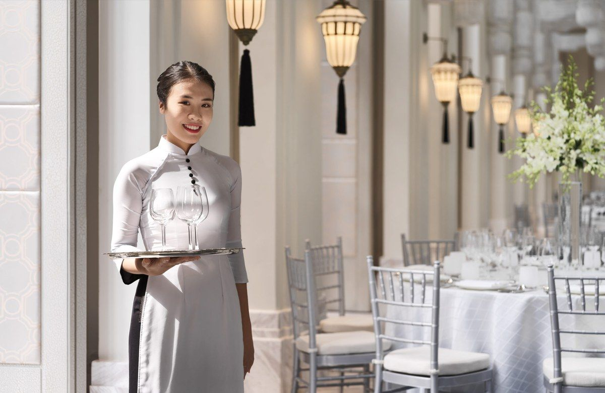
A member of the resort’s staff in a white ao dai.
Beautiful hotels can be built with enough money.
Outstanding service is considerably more difficult to manufacture.
And ultimately, this is where a luxury resort either earns its reputation or exposes the difference between appearance and substance.
At a property like the InterContinental, guests interact with employees throughout the day: reception staff, buggy drivers, restaurant servers, bartenders, housekeeping teams, beach attendants, and concierge personnel.
Each interaction is an opportunity to either enhance or diminish the overall experience.
The standard I look for is service that feels genuine rather than rehearsed.
Employees should be attentive without hovering, proactive without being intrusive, and friendly without making every interaction feel scripted.
It's also important that the quality of service remains consistent across the entire property.
A wonderful experience at reception means little if guests encounter indifferent employees at breakfast or have difficulty getting assistance at the beach.
The most memorable hotel service often comes from small gestures rather than extravagant ones.
Remembering a preference, recognizing a returning guest, providing useful recommendations, or noticing something that needs attention before being asked can make an enormous difference.
These moments are what distinguish a stay that is merely expensive from one that feels truly exceptional.
Our experience with the Planet Trekkers staff provided a particularly memorable example of the type of hospitality that makes this resort special.
The women working at the Kids Club weren't merely supervising children. They were actively creating enjoyable experiences, helping with crafts, painting nails, and treating the children in their care with warmth and enthusiasm.
Likewise, the Club Lounge check-in demonstrated how something as ordinary as completing registration paperwork can become an opportunity for exceptional hospitality.
When employees make complicated things feel effortless, guests can spend more time enjoying the property and less time thinking about logistics.
That, ultimately, is what great service should accomplish.
Families and Children: More Welcoming Than You Might Expect
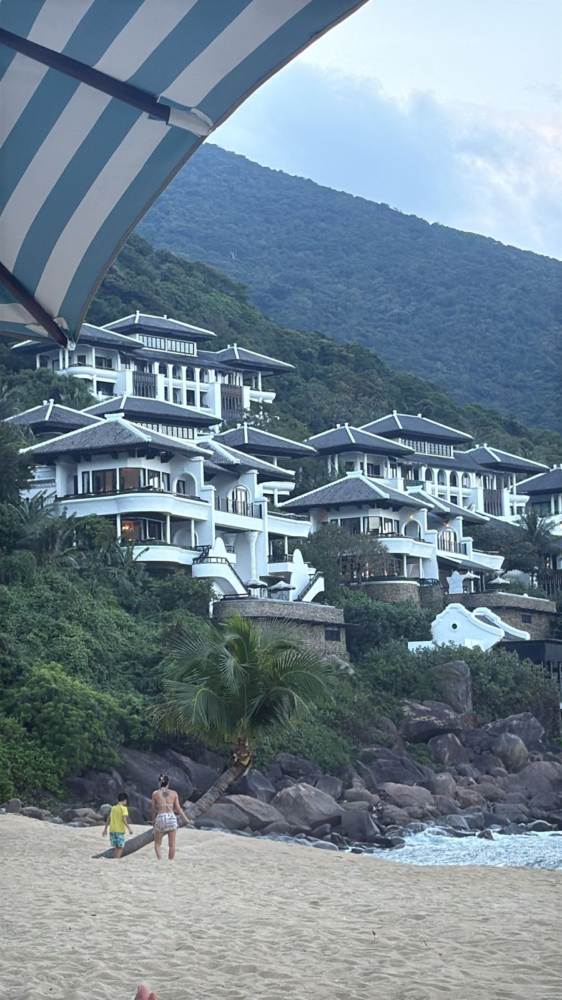
The hillside villas, seen from beneath a beach umbrella.
The InterContinental's reputation and extravagant appearance might suggest a resort aimed primarily at honeymooners or wealthy couples.
But the property also offers plenty of appeal for families.
The beach, family-friendly swimming facilities, recreational activities, and unusual transportation system give children experiences beyond the ordinary hotel swimming pool.
The Nam Tram alone is the sort of feature younger guests may want to ride repeatedly.
A resort like this works best for families when employees make children feel welcome rather than merely tolerated.
Child-friendly dining options, engaging activities, and a willingness to accommodate reasonable family requests can dramatically improve the experience.
Parents should also keep in mind the property's mountainous layout.
The distances and changes in elevation make it important to plan transportation, particularly when traveling with very young children.
The resort is luxurious, but that doesn't necessarily mean it has to be formal or intimidating.
Some of the best family memories happen in places where everyone, regardless of age, feels comfortable enjoying the surroundings.
The Price: Is It Worth the Money?
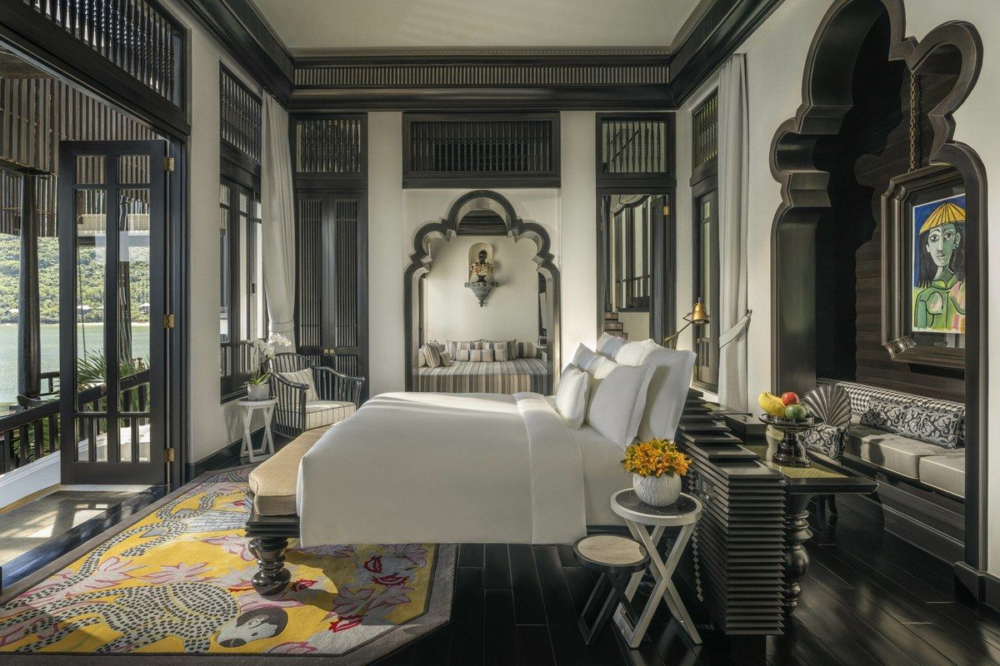
A guest room: dark wood, a Moorish-style arch and a bold yellow carpet.
There's no point pretending this is an inexpensive vacation.
The InterContinental Danang Sun Peninsula Resort sits at the premium end of Vietnam's luxury hotel market.
Travelers can find excellent five-star accommodations elsewhere in Da Nang for substantially less money.
In fact, that's one of the reasons Vietnam is such an appealing destination for luxury travelers. Beautiful accommodations, excellent food, and attentive service are often available at prices far below those in many international destinations.
So what makes the InterContinental worth the premium?
In my view, it's the combination of attributes that are almost impossible to find together elsewhere.
The architecture is distinctive. The private beach is exceptional. The surrounding natural environment is extraordinary. The dining collection is unusually ambitious. And the entire property has been designed to feel like a destination rather than a place to spend the night.
That doesn't necessarily make it the right choice for every traveler.
If your primary goal is to explore Da Nang, eat at local restaurants every evening, and use your hotel mainly for sleeping, the additional expense may be difficult to justify.
But for a special occasion, romantic getaway, family celebration, or luxury vacation where the resort itself is the main attraction, the value proposition becomes much stronger.
You aren't simply paying for a more expensive hotel room.
You're paying for an experience that is remarkably difficult to reproduce.
What Could Be Better?
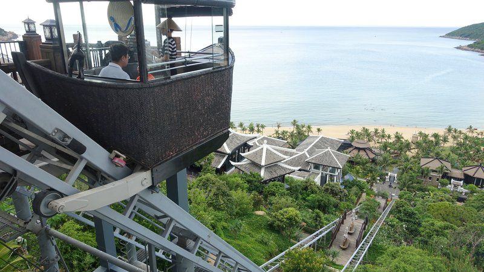
The Nam Tram cabin on its way down the hillside to the beach.
No hotel is perfect, and a 9.9 rating shouldn't suggest that the InterContinental is entirely without compromises.
The most obvious drawback is location.
Its isolation is a major part of its appeal, but guests hoping to explore central Da Nang every day will find the journey less convenient than staying near My Khe Beach.
The property's dramatic layout can also create practical challenges.
Getting between the higher elevations, restaurants, swimming pools, and beach requires more coordination than at a conventional hotel.
While the funicular and buggy transportation are memorable features, some travelers may prefer a compact resort where everything is within a short walk.
Then there's the price.
At this level, expectations are understandably enormous, and even small service inconsistencies can stand out more than they would at a moderately priced property.
Guests should also be aware that some outdoor experiences depend on weather conditions, particularly during Da Nang's rainy season.
These aren't necessarily failures.
They're the trade-offs associated with staying at a remarkable resort built into a secluded mountainside.
And in my assessment, the advantages overwhelmingly outweigh the inconveniences.
Check-Out: When You Don't Want to Leave
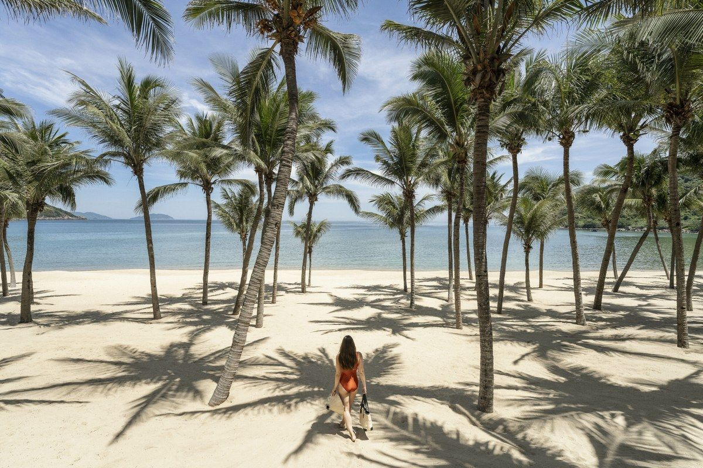
Palms and white sand on the private beach.
There's a moment during every hotel stay when the experience comes to an unavoidable end.
No matter how comfortable the room, how spectacular the view, or how much you've enjoyed yourself, eventually it's time to pack your bags, settle the bill, and head home.
Normally, that's a fairly straightforward process.
You hand over your room key, confirm that you haven't accidentally consumed a $14 bag of minibar peanuts, and leave.
But at the InterContinental Danang Sun Peninsula Resort, even checking out manages to feel like an experience worth remembering.
When it was time to leave our Panoramic King room, one of the resort's electric buggies arrived to collect us and our belongings.
We were whisked away through the property, making our way back toward the Club InterContinental Lounge, where the staff took care of the departure formalities.
It was an appropriately effortless conclusion to a stay that had been defined by precisely that kind of attention.
Just as we had experienced upon arrival, there was no need to stand around a reception desk wondering how long everything would take.
The staff handled the details.
We were free to relax.
And that should have been the end of the story.
Except we didn't particularly want to leave.
Ninety More Minutes of Paradise
There's something almost funny about checking out of a hotel and then voluntarily spending another hour and a half sitting inside it.
But that's exactly what we did.
Not because there was a problem with our transportation.
Not because we had somewhere to be later in the day.
And certainly not because the staff were taking too long to complete the paperwork.
We simply didn't want the experience to end.
So we stayed.
For roughly 90 minutes longer than we needed to, we sat in the Club InterContinental Lounge, enjoying tea, coffee, and the extraordinary surroundings one final time.
The view hadn't changed.
The staff were just as welcoming and attentive as they had been when we arrived.
The setting was every bit as memorable as it had been throughout our stay.
But something about knowing we were leaving made it all feel a little more special.
Every so often, you find yourself looking around and realizing that you're going to miss a place.
Not just the comfortable bed or the beautiful swimming pool.
The actual feeling of being there.
That's what happened to us.
There was no urgency to stand up, no sense that we were occupying space we were no longer entitled to enjoy, and no suggestion that our experience had ended the moment our room was checked out.
Instead, the staff continued treating us with the same warmth and hospitality we'd experienced throughout our visit.
And the lounge remained the perfect place to enjoy those final moments.
At most hotels, the check-out process is a transaction.
At the InterContinental, it felt more like the last chapter of a genuinely memorable vacation.
I also think there's something to be said for a resort that makes you want to stay even after you've officially left your room.
That's not something I've experienced very often.
Usually, once the bags are packed and the bill is settled, you're ready to get on with the day.
Here, we were looking for excuses to remain seated.
One more coffee.
A little more tea.
Another few minutes taking in the scenery.
And then another few minutes after that.
Eventually, of course, there was nothing left to do but admit that the vacation had come to an end.
The staff had been amazing.
The setting was unforgettable.
And we'd successfully stretched our departure by a full 90 minutes.
But even the best hotel stays have to end sometime.
It was finally time to go home.
Or so we thought.
The Monkeys Say Goodbye: One Last Surprise
Just when I thought the InterContinental had exhausted its ability to surprise me, it saved perhaps its most memorable moment for the very end.
We had checked out, collected our belongings, and were walking toward our car, preparing to leave the resort behind.
And then we saw them.
Monkeys.
But not just any monkeys.
High in the trees surrounding the property was a family of red-shanked douc langurs, one of the world's rarest and most remarkable primates, going about their day among the branches.
A red-shanked douc langur in the trees near the resort.
The species is classified as critically endangered, and Son Tra Peninsula, appropriately nicknamed Monkey Mountain, is home to one of its most important remaining populations.
With their striking orange faces, white facial hair, long tails, and distinctive reddish legs, these animals look almost too colorful to be real.
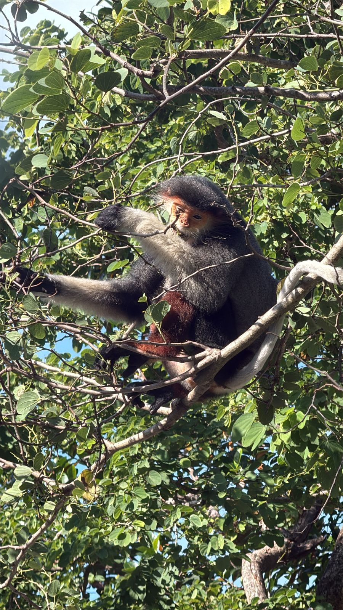
Orange face, chestnut legs, white tail: a douc langur feeding in the canopy.
They're sometimes described as among the most beautiful monkeys in the world.
And here they were, living freely in the same forest that surrounds one of Vietnam's most extraordinary luxury resorts.
There's something remarkable about that contrast.
Inside the property, guests are surrounded by extraordinary architecture, elaborate restaurants, and carefully designed luxury.
Just beyond it, nature is carrying on with its day, completely uninterested in how much anyone paid for their room.
The animals weren't putting on a performance.
They weren't part of some scheduled wildlife presentation.
They were simply a family enjoying an ordinary day in the trees.
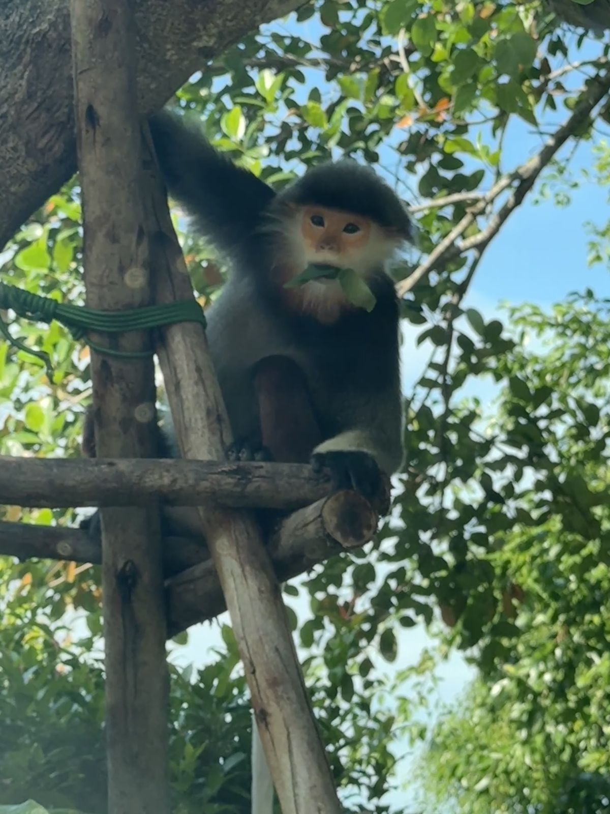
A douc langur perched on wooden poles, a leaf in its mouth.
And we were fortunate enough to be there to witness it.
You Know It's Special When the Locals Stop to Watch
But here's how I knew this was something genuinely extraordinary.
It wasn't just the hotel guests who were stopping to look.
The local private car drivers were doing the same thing.
These were people who work in Da Nang, drive through the area, and spend their days transporting guests to and from the resort.
And even they were pulling out their phones, taking photographs, and staring into the trees in amazement.
That told me everything I needed to know.
I've developed something of a rule of thumb after years of living and traveling in Vietnam.
If something impresses the locals, it's probably something that should impress you, too.
Tourists are easily impressed. We're supposed to be.
We take pictures of things locals walk past every day without giving them a second thought.
But when the people who live and work in an area stop what they're doing to admire something, you know you're witnessing something special.
The drivers' reactions made it clear that encountering these remarkable animals isn't an everyday occurrence, even for people familiar with the mountain.
And that made the experience feel all the more meaningful.
A Reminder of What Makes This Resort Different
The InterContinental's location inside the Son Tra Nature Reserve comes with an important responsibility.
The resort shares the surrounding rainforest with native wildlife, including the critically endangered red-shanked douc langurs.
The property has undertaken conservation initiatives, including installing special wildlife bridges made from bamboo and rope to help animals travel between sections of the forest canopy without having to descend to the ground.
It's an important detail because it demonstrates that the surrounding landscape is more than just scenery.
This is a living ecosystem, home to animals whose survival depends on protecting their natural habitat.
And while the resort is understandably celebrated for its architecture, service, and extraordinary luxury, the opportunity to coexist with that natural environment is arguably just as important.
Seeing those monkeys on our way out brought the entire experience full circle.
We had arrived through the mountain roads, marveling at the forest and wondering what awaited us inside.
We spent our stay enjoying the remarkable amenities of a resort that seems almost impossible to improve upon.
We even lingered in the Club Lounge for an extra 90 minutes because none of us particularly wanted to leave.
And then, just as we were finally preparing to return to everyday life, the forest offered one final surprise.
There was no need for an elaborate farewell ceremony.
No carefully arranged goodbye gift.
No final luxury experience designed by the hotel.
Just a family of rare monkeys in the trees, and a small crowd of visitors and local drivers looking on in awe.
It was spontaneous, completely unexpected, and absolutely perfect.
I can't imagine a more fitting way to say goodbye to the InterContinental Danang Sun Peninsula Resort.
Final Verdict: 9.9 Out of 10
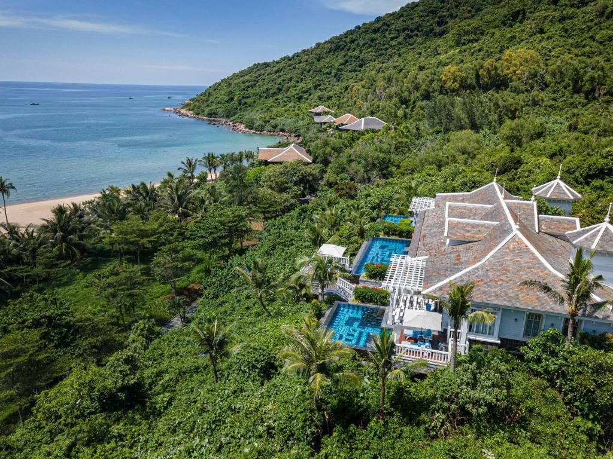
A hillside villa and its pool, with the bay beyond.
After years of living in Da Nang, I have developed an enormous appreciation for the city's hospitality industry.
This is a destination where even relatively modest hotels can deliver excellent experiences, and where international luxury brands compete in a market filled with beautiful beachfront properties.
Yet the InterContinental Danang Sun Peninsula Resort occupies an entirely different category.
It is one of those rare hotels where the architecture, natural setting, restaurants, facilities, and overall concept come together to create something much greater than the sum of its parts.
There are more convenient hotels in Da Nang.
There are certainly less expensive ones.
There are even properties that may be better suited to specific types of travelers.
But few can match the complete experience offered by the InterContinental.
From the drive through Son Tra Peninsula to the spectacular first impressions, the Club Lounge, remarkable swimming pools, private beach, and extensive dining options, the resort consistently demonstrates why it belongs among Vietnam's most celebrated luxury destinations.
And then there were the monkeys.
A final, unexpected reminder that no matter how elaborate the accommodations or how remarkable the dining experiences, the resort's greatest luxury might ultimately be its extraordinary location.
Most importantly, it has something that can't be purchased simply by installing expensive marble or adding another swimming pool.
It has a personality.
It has a sense of place.
And it creates the kind of experience that makes leaving genuinely disappointing.
Final rating: 9.9/10.
For travelers seeking an extraordinary luxury resort experience in Vietnam, the InterContinental Danang Sun Peninsula Resort belongs at the very top of the list.
Check Your Dates
Check Your Dates
Hotel prices change constantly. Check the current rate before deciding whether the value makes sense for your trip.